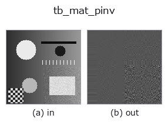

typed op• Data kinds: matrix → matrix
• Call: fullseye.apply(img, "tb_mat_pinv", a=0.5, b=0.5) (2-D model = एक image + दो scalar knobs a,b∈[0,1])

*Figure synthetic 128×128 input पर सच में चलाकर मिला output है। बाईं ओर input, दाईं ओर output। Point clouds ऊपर से देखे गए scatter के रूप में (brightness = z), 1-D series line के रूप में, volumes z दिशा में maximum-intensity projection के रूप में, videos बीच के frame के रूप में, complex images amplitude के रूप में, और जो return values चित्र नहीं बन सकते वे स्वयं values के रूप में दिखाए जाते हैं।*
*Knob a output नहीं बदलता (मापा गया: 0.1 / 0.5 / 0.9 पर एक जैसा)।*
*Knob b output नहीं बदलता (मापा गया: 0.1 / 0.5 / 0.9 पर एक जैसा)।*
Stages (पहले आने वाले ops → यह op, बाएँ से क्रम में):
▸ tb_mat_pinv: stages का figure (docs site)
दूसरी images पर भी (synthetic scene / photo / coins। ऊपर की row में inputs, नीचे की row में उनके outputs। Knobs default पर):
▸ tb_mat_pinv: दूसरी images पर output (docs site)
SVD से Moore-Penrose pseudo-inverse, cutoff explicit रखते हुए।
> नीचे का विस्तृत विवरण मूल text में है — सारांश और headings का अनुवाद हो चुका है।
Singular values below rcond * s_max are treated as zero — that cutoff *is* the regularisation, so it is a named, documented parameter here (default 1e-12) rather than a hidden library default: raising it discards noisy directions (stabler, more biased), lowering it keeps them (exact for well-conditioned *A*, explosive near rank deficiency).
Works for any (m, n): pinv(A) @ b is the least-squares solution for m > n and the minimum-norm solution for m < n.
HALCON: no direct operator — HALCON reaches the same result through svd_matrix + reciprocal singular values.
Typed bridge of the math op mat_pinv into the 2-D evolution registry: the same implementation, called under the op(v, a, b) convention. a drives rcond (default 1e-12); b is unused.
• Sample data catalog (DL URL / license) — 2-D के लिए skimage.data (BSD/public) + synthetic, 3-D के लिए real data sources (Stanford/PDS आदि) के DL URL।
• Operators का स्रोत और संदर्भ — इस op family के मूल research/methods के स्रोत।
नीचे का program सच में चलता है, यह जाँचा गया है (figure वाला ही input)। Studio की help में यह block buttons बन जाता है, जिनसे इसे वहीं load करके चलाया जा सकता है।
img_to_matrix 0.50 0.50 tb_mat_pinv 0.50 0.50
▸ यह pipeline load करें · Load करके चलाएँ
नीचे के उदाहरण मूल ledger op mat_pinv को call करते हैं। यह bridge op वही implementation है, बस fn(v, a, b) convention के अनुसार ढाला गया है, इसलिए व्यवहार वैसा ही लागू होता है (केवल call का रूप अलग है)।
• math_metrology — py -3.11 examples/math_metrology.py
• poc_machine_condition_fusion — py -3.11 examples/poc_machine_condition_fusion.py
matrix को input के रूप में लेते हैं)identity · tb_mat_cond · tb_stat_covariance · tb_stat_correlation · tb_intrinsics_to_fullseye · tb_intrinsics_to_carla · matrix_to_img
typed)tb_points_to_voxel · tb_estimate_point_normals · tb_iss_keypoints · tb_project_points · tb_render_point_depth · tb_statistical_outlier_removal · tb_radius_outlier_removal · tb_voxel_grid_downsample
*Provenance: ops.py — 2D operator registry. यह per-op note tools/opdocs.py md से अपने-आप generate होता है (हाथ से edit न करें)।*
© 2026 Kazufumi Furuse — Fullseye operator documentation. Licensed under Apache-2.0.